Наши процедуры
-
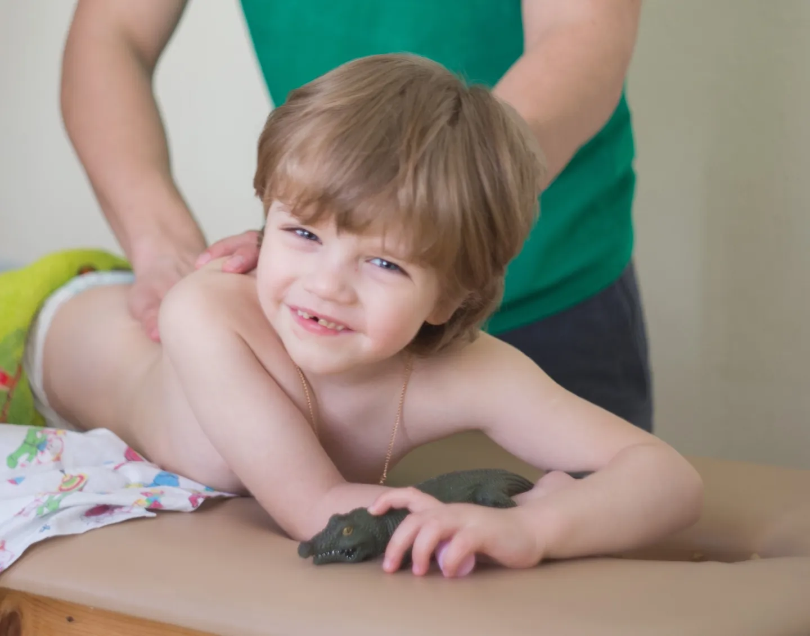
общий массаж
Массаж общий с разработкой суставов назначается для:
— нормализации двигательной функции и повышения тонуса мышц;
— улучшения проводимости мышц;
— улучшения движения биологических жидкостей;
— предотвращения ограничений пассивных движений в суставах;
— нормализации метаболических процессов;
— улучшения общего состояния. -
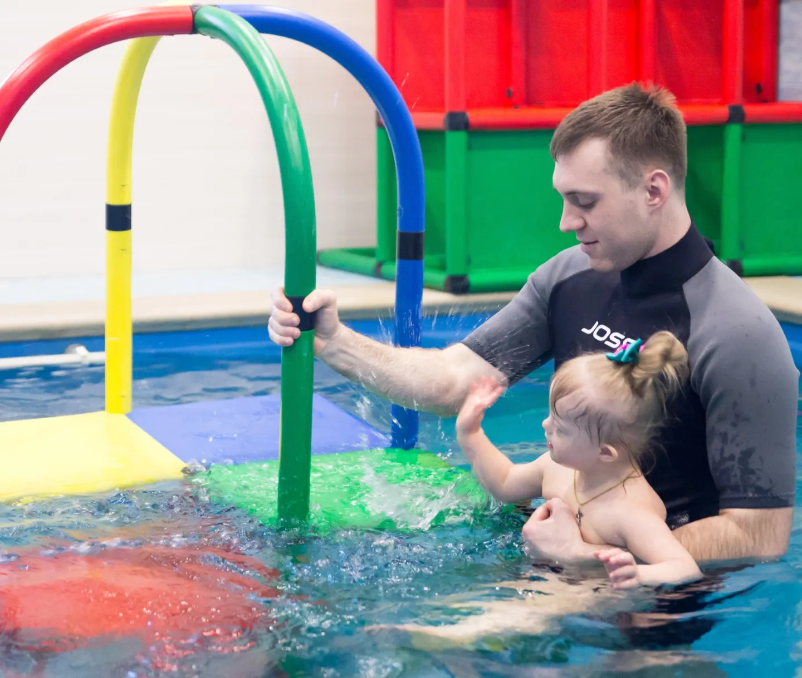
водные процедуры
В нашем бассейне занятия проходят под руководством опытных сертифицированных инструкторов!
В ходе занятий:
— укрепляется иммунная система;
— расслабляется нервная система;
— пропадает страх перед водой;
— снижается гипертонус;
— нормализуется сон;
— происходит закаливание организма;
— малыш получает положительные эмоции. -
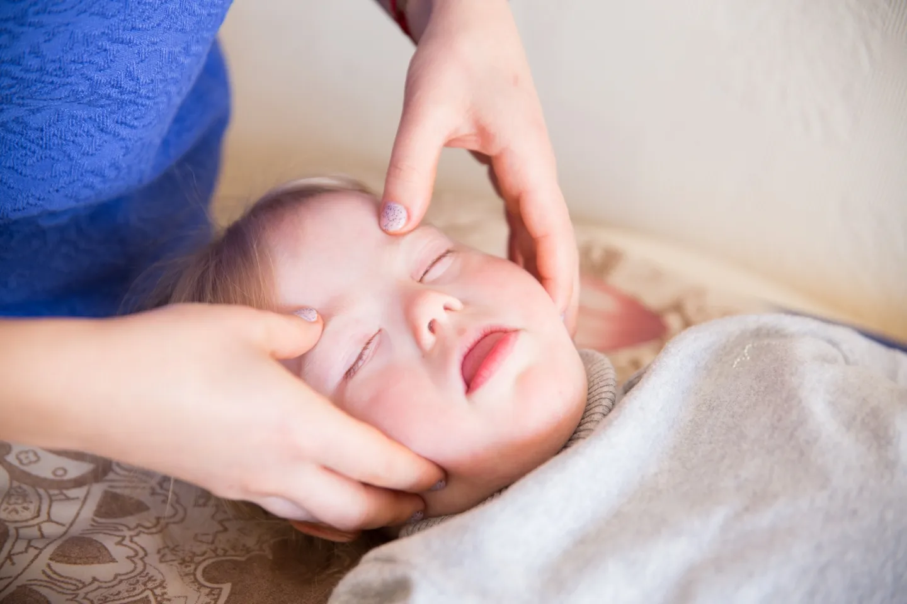
логопедический массаж
Основными задачами логопедического массажа являются:
— нормализация мышечного тонуса, преодоление гипертонуса в мимической и артикуляционной мускулатуре;
— устранение гиперкинезов, синкинезий, девиации;
— стимуляция положительных кинестезий;
— улучшение качества артикуляционных движений;
— увеличение силы мышечных сокращений;
— активизация тонких дифференцированных движений органов артикуляции, необходимых для коррекции звукопроизношения. -
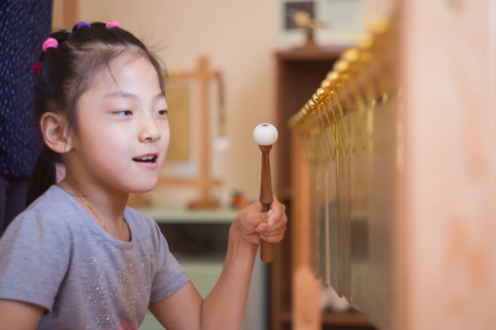
билотерапия
С помощью билотерапии можно решить много задач:
— вывести человека из состояния уныния или депрессии;
— устранить стресс;
— создать позитивное настроение;
— активировать умственную деятельность;
— снять боль;
— снять соматическое напряжение за счёт физиоакустического эффекта;
— ликвидировать в мозге очаги «застойного» возбуждения;
— облегчить состояние психосоматических заболеваний;
— повысить эффективность выполнения различных психотерапевтических техник. -
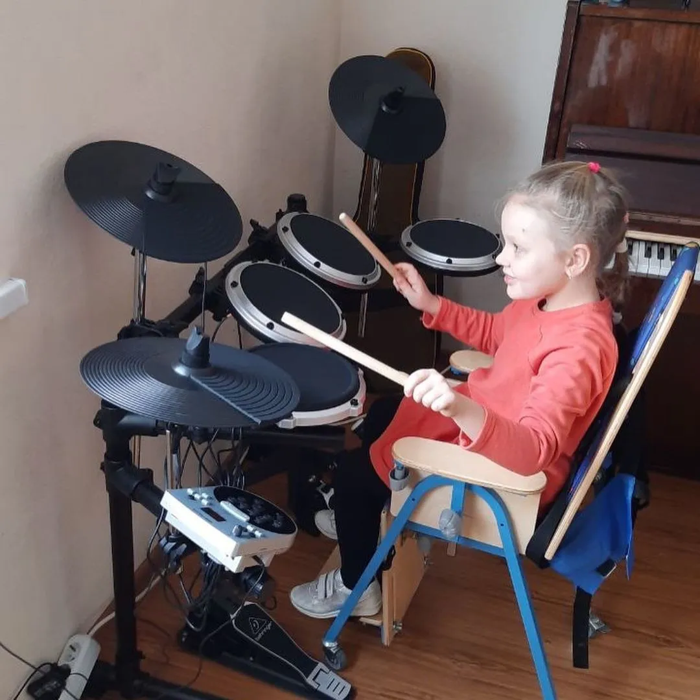
Музыкальная терапия
Полезность музыкотерапии в работе с детьми с ограниченными возможностями в том, что она:
— помогает укрепить доверие, взаимопонимание между участниками процесса;
— помогает ускорить прогресс терапии, так как внутренние переживания легче выражаются с помощью музыки, чем при разговоре;
— музыка усиливает внимание к чувствам, служит материалом, усиливающим осознание;
— косвенно повышается музыкальная компетенция, возникает чувство внутреннего контроля и порядка. -
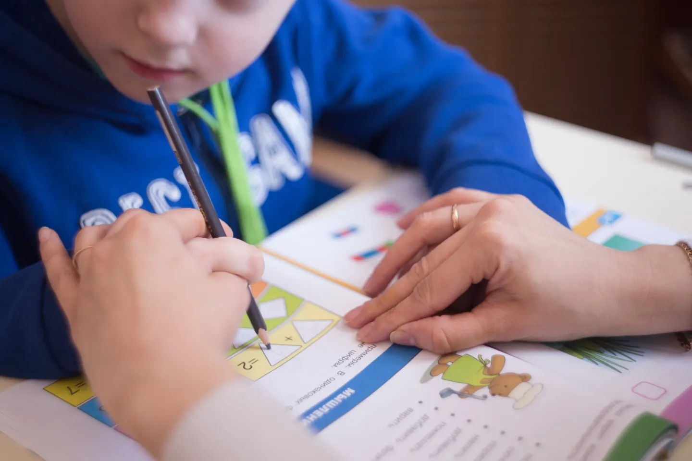
Занятия с психологом
Психология
Основными компонентами психики являются потребности и образы, благодаря которым осуществляется ориентирование поведения деятельности человека. Потребности порождают цели, которые вместе с образами окружающей среды ориентируют человека на удовлетворение соответствующих нужд. В целом различные психические компоненты поведения образуют своего рода структуру, придающую ему устойчивость. У человека эта структура выступает в виде психического склада личности (ее способностей, характера, темперамента, ценностных ориентаций и т. п.), который определяет своеобразие конкретных психических проявлений. Несмотря на то, что особенностями основных психических процессов (ощущений и образов восприятия, мыслей и чувств) являются их внутренний характер, недоступность непосредственному объективному наблюдению, существует возможность их постижения как реальности, независимой от субъективного самоотчета о них, обусловленная возникновением и развитием этих процессов в объективной системе отношений с другими людьми.
-
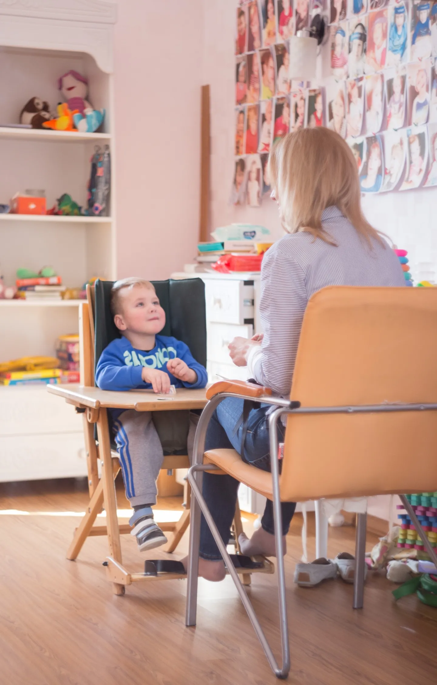
Занятия с логопедом
Логопедия
Недостатки речи различны по своим проявлениям, своей природе, степени выраженности и влиянию на психич. состояние и развитие. Нек-рые нарушения относятся только к произношению (косноязычие), другие проявляются также в нарушениях чтения (алексия, дислексия), письма (аграфия, дисграфия) или захватывают лексико-грамматич. сторону речи (напр., алалия, афазия). Часто недостатки речи выражаются в расстройствах её темпа и плавности (заикание, тахилалия, брадифразия). Нарушения речи затрудняют общение с окружающими, нередко препятствуют успешному развитию познават. деятельности детей, неблагоприятно влияют на формирование их психики. У детей появляются такие черты, как замкнутость, неуверенность в себе, негативизм и другое.
-
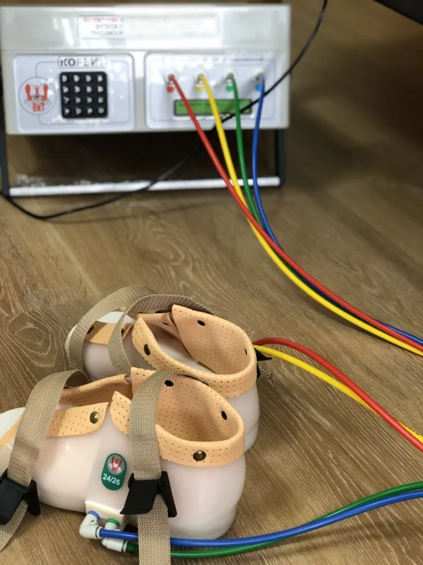
Имитатор подошвенной нагрузки «Корвит»
«Корвит» — это уникальный тренажёр для механотерапии, созданный в России, и предназначенный для имитации опорной нагрузки на ноги.
Показания к применению имитатора опорной нагрузки:
— гемипаретическая форма ДЦП;
— атонически-астатическая форма ДЦП;
— спастическая диплегия;
— эквинусная установка стоп у детей;
— отсутствие опорности стоп при хорошем соматическом и психическом состоянии ребёнка;
— отсутствие шаговых движений у ребёнка;
— вынужденная гипокинезия, вызванная тяжелым состоянием больного и невозможностью проведения ранней мобилизации. -
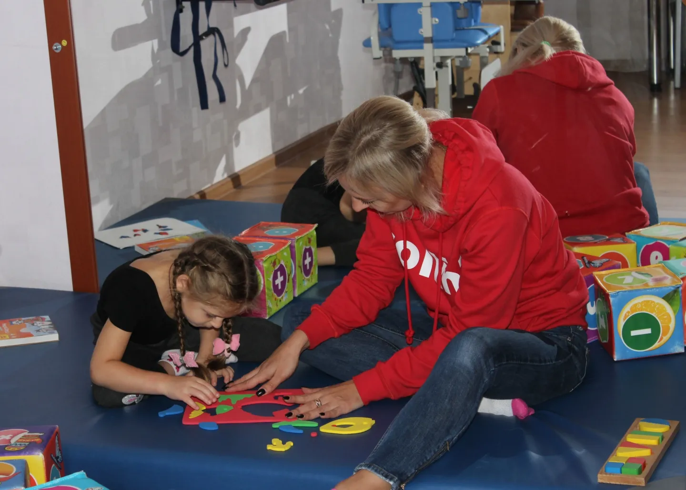
Занятия с педагогом-дефектологом
Учитель-дефектолог — это педагог, специализирующийся на работе с детьми, имеющими различные отклонения в развитии. В своей работе он используют различные средства, направленные на коррекцию и компенсацию недостатков, порождающих трудности в овладении учебными знаниями, умениями и навыками у детей разного возраста, находящихся в специализированных условиях обучения.
-
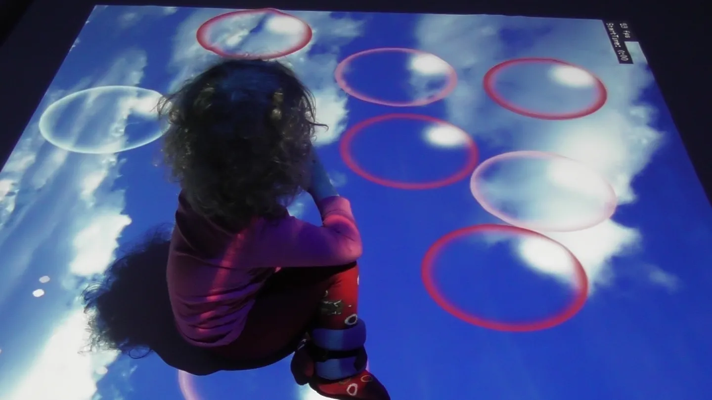
Сенсомоторная интеграция
Интерактивная комната — это особым образом организованная среда, состоящая из множества различного рода стимуляторов, воздействующих на базовые органы чувств (зрение, слух, обоняние, осязание) и вестибулярные рецепторы. Предназначена для решения следующих задач: обучение на основе сенсорной стимуляции, социальной сети адаптации (например, детей с аутизмом), снятия мышечного и психоэмоционального напряжения, активизации различных функций нервной системы, стимуляцией зрения, осязания, слуха.
-
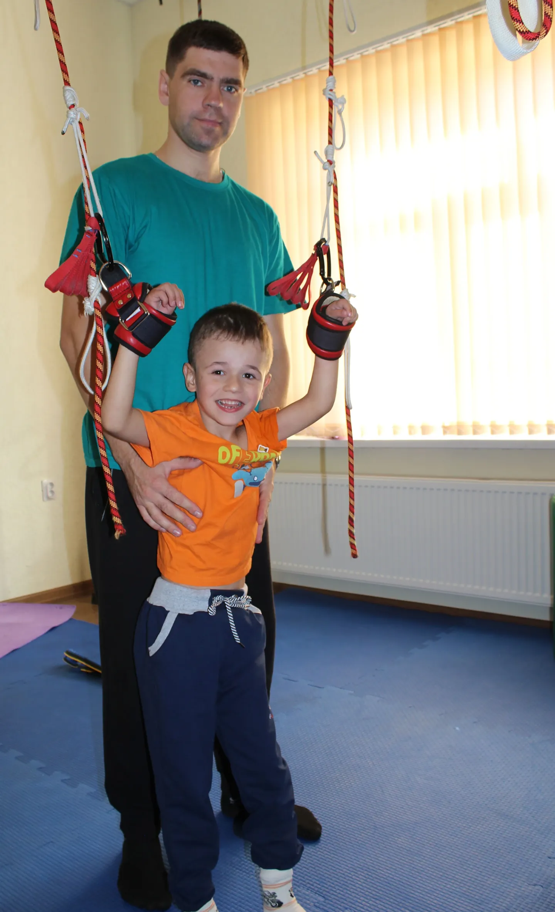
Физическая реабилитация
Во время занятий ЛФК и АФК при ДЦП:
— расслабляются нижние и верхние конечности;
— укрепляются мышцы живота и спины;
— сохраняется способность держать равновесие стоя;
— развиваются локомоторные движения, гибкость;
— развивается мелкая моторика рук, способность к произвольному торможению движений;
— снижается гипертонус мышц;
— улучшается координация движений;
— увеличивается амплитуда движений в суставах; -
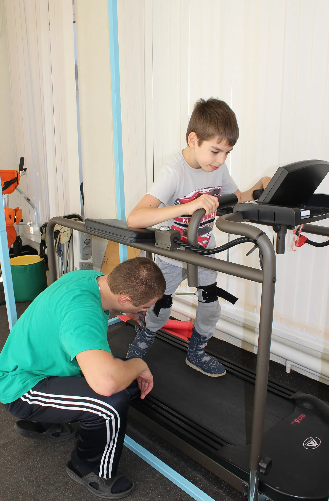
Занятия на тренажёрах
Занятие тренировочного типа с тренажерами позволяют детям овладеть комплексом упражнений, способствующих укреплению мышц рук, плечевого пояса, брюшного пресса, спины, ног и развитию силы, быстроты движений, ловкости, гибкости и общей выносливости. Упражнения на тренажерах совершенствуют координацию движений, укрепляют суставный аппарат, улучшается гибкость позвоночника, развивается грудная клетка, совершенствуется осанка.
-
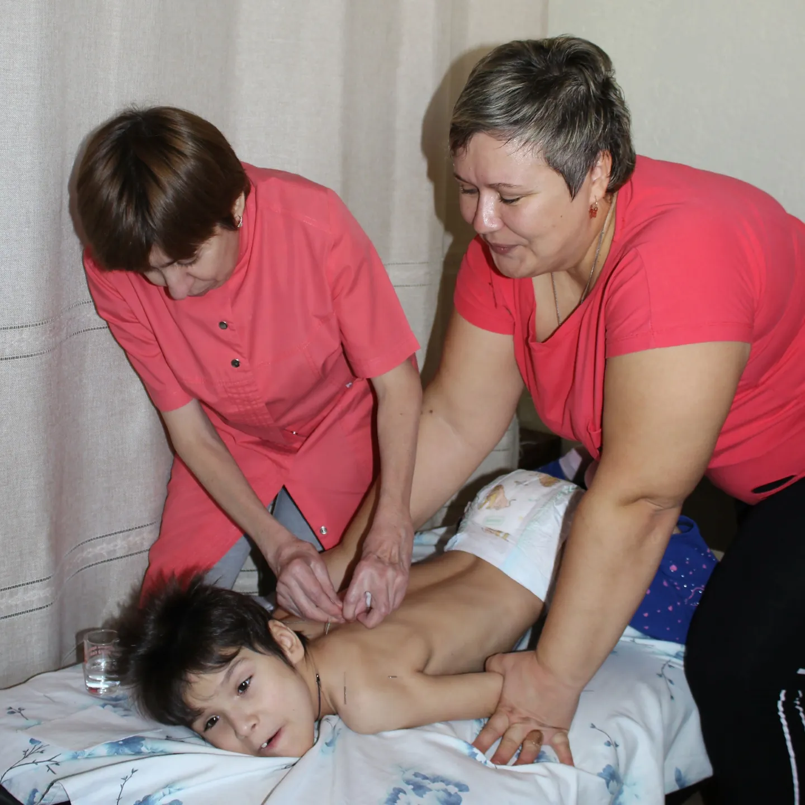
Фармакопунктура
Фармакопунктура — методика введения в организм человека разных лекарственных препаратов через активные точки, которые группируются в так называемые меридианы (12 парных и 2 непарных, не считая «чудесных» меридиан) и охватывают человека полностью (туловище, голову, верхние и нижние конечности по передней, задней и боковыми поверхностями). За счет того, что введение производится в биологически активные точки достигается двойное воздействие на организм: фарамакотерапия и стимуляция точек. Стимуляция акупунктурных точек регулирует циркуляцию энергии, функциональную деятельность всего организма и нормализует его физиологические функции. Вместе с этим, лекарственные препараты, проникая постепенно в систему кровообращения и распространяясь по всему организму, также оказывают на него лечебное воздействие.
-
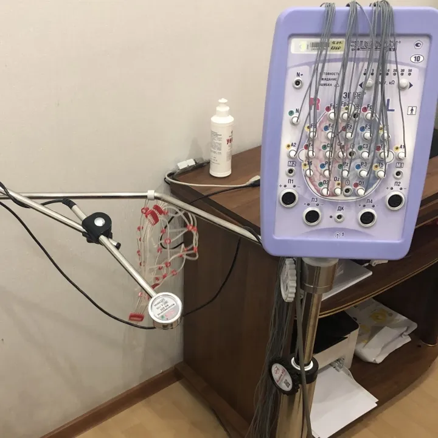
Электроэнцефалограмма
Электроэнцефалография (ЭЭГ) — метод, который применяется для исследования состояния человеческого мозга и базируется на регистрации его электрической активности. Это обследование позволяет обнаружить распространение патологических процессов и признаки эпилепсии.
-
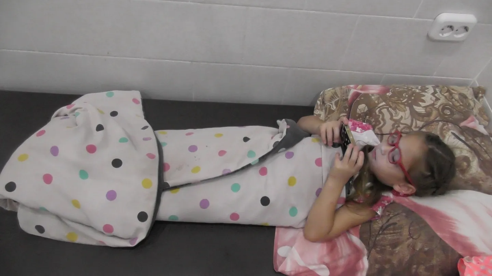
Грязевые апплекации
Грязевые аппликации обладают регенерирующим, трофическим, противомикробным эффектом. Также у них есть бактерицидное действие, они способны улучшить кровообращение, стабилизировать жировой баланс и очищать кожный покров.
Грязевые аппликации активно применяются в нашем Центре при лечении заболеваний нервной системы и опорно-двигательного аппарата. После применения данных процедур отмечается снижение спастики мышц, улучшение походки, увеличение объема движений в суставах.
-
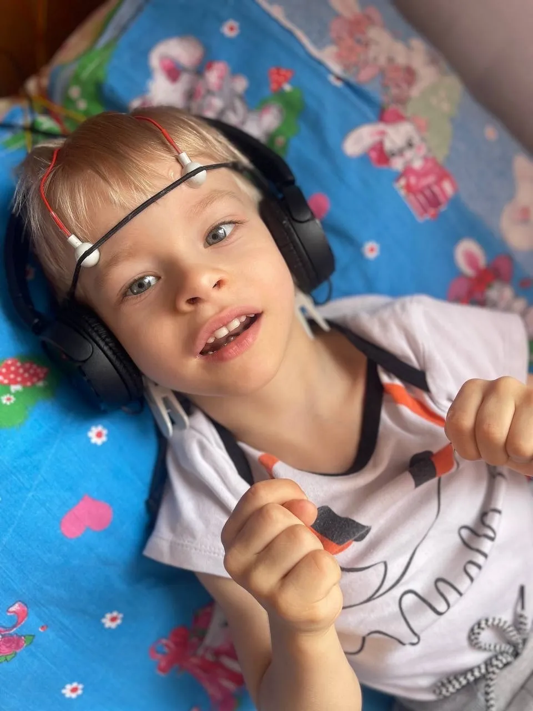
Биоакустическая коррекция
Биоакустическая коррекция (БАК) — это способ, который заставляет мозг работать и налаживать старые «древние» связи. Ребенок слушает музыку, которая построена согласно его собственной электроэнцефалограммы. Она синхронизируется с работой мозга в режиме реального времени, вступает с ним в некий резонанс. Мозг слышит сам себя, т. е. свое эхо!
Процедура БАК заключается в прослушивании пациентом акустического образа собственной электроэнцефалограммы, полученного путем преобразования текущей биоэлектрической активности головного мозга в звук слышимого диапазона.
Метод БАК показан детям:
— c нарушениями психического развития (задержка умственного развития, умственная отсталость, аутистический синдром);
— c нарушениями речевого развития (дизартрия, дислалия, ОНР, алалия, дисграфия, дислексия);
— c синдромом дефицита внимания и гиперактивностью;
— c неврозоподобными нарушениями (тики, энурез);
— при последствиях ОНМК, органического поражения головного мозга, черепно-мозговых травм;
— со сниженным слухом. -
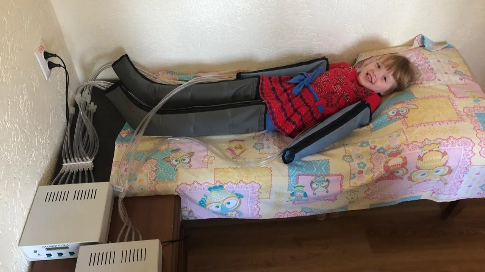
Пневмомассаж
Пневмомассаж предназначен для проведения циклического массажа верхних и нижних конечностей при профилактике и лечении сердечно-сосудистых нарушений, венозных и лимфатических расстройств, в т. ч. после операций, для предотвращения заболеваний, связанных с ограничением движения, а также для косметического (антицеллюлитного) и спортивного (восстановительного) массажа.
-
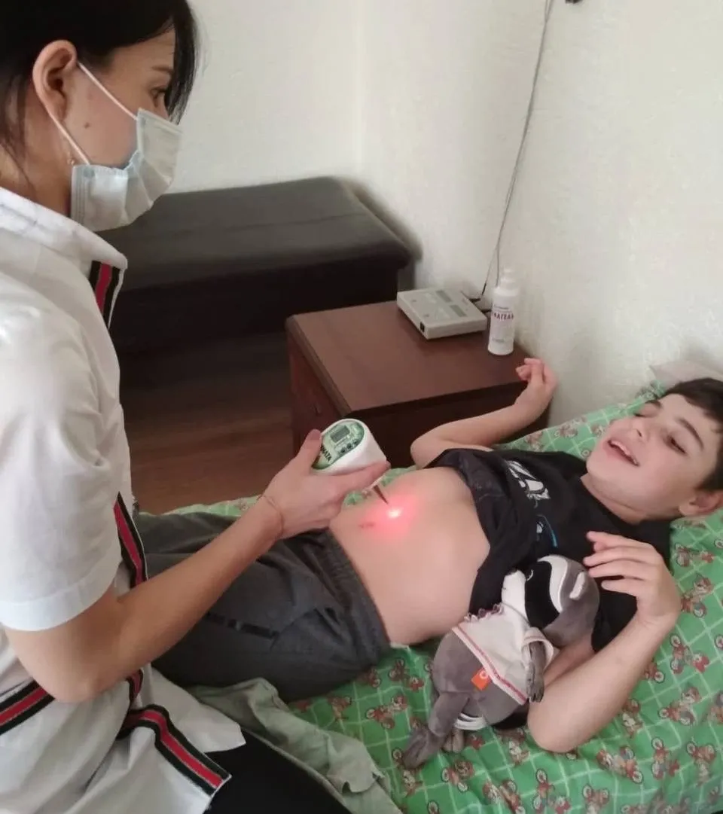
Физиопроцедуры
Физиотерапия — важный метод лечения, применяемый при различных острых и хронических заболеваниях. Физиотерапевтические процедуры имеют минимум побочных эффектов, легки в применении; зачастую при лечении этим методом используют разнообразные природные факторы. Физиотерапия незаменима в период реабилитации, восстановления после различных заболеваний, при профилактике обострений заболеваний, а также как способ укрепления организма, поддержания тонуса, работоспособности и хорошего настроения.
Электролечение — методы физиотерапии, основанные на использовании дозированного воздействия на организм электрических токов, электрических, магнитных или электромагнитных полей.
Электрические явления играют большую роль в важнейших физиологических процессах:
— возбуждении и его проведении;
— трансмембранном переносе веществ.Показателем биоэлектрической активности тканей, связанной с протекающими метаболическими процессами, служит разность электрических потенциалов, определяемая между двумя точками живой ткани. Обычно такую разность потенциалов условно называют просто потенциалом. Электрический ток и электромагнитные колебания определённых параметров широко используются в качестве физиологических раздражителей, влияющих на функциональное состояние отдельных органов и систем организма с лечебной целью.
-
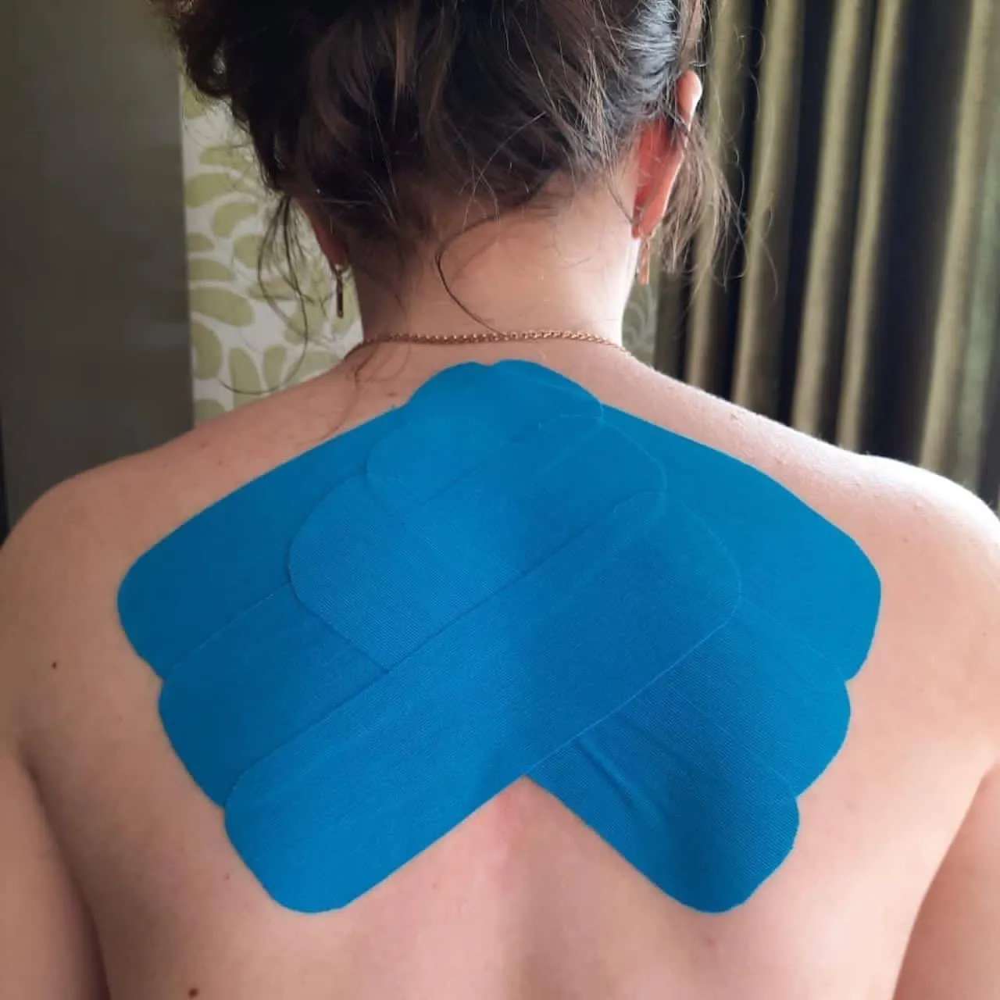
Кинезиотейпирование
Тейпы, которые специалист наносит на кожу лица, шеи, грудной клетки ребенка, способствуют решению очень актуальных проблем, влияющих на речевое развитие:
— полуоткрытый рот, нарушение носового дыхания и гипотонус мышц ВНЧС;
— гиперсаливация (слюнотечение);
— инфантильный тип глотания;
— нарушение жевания;
— затруднение произношения из-за слабого тонуса мышц губ и щек;
— нарушение общей и мелкой моторики;
— тейпы помогают сформировать диафрагмальный тип дыхания;
— парезах и невритах;
— птозах ( опущениях органа);
— комплексной реабилитации пациентов, перенесших инсульт. -
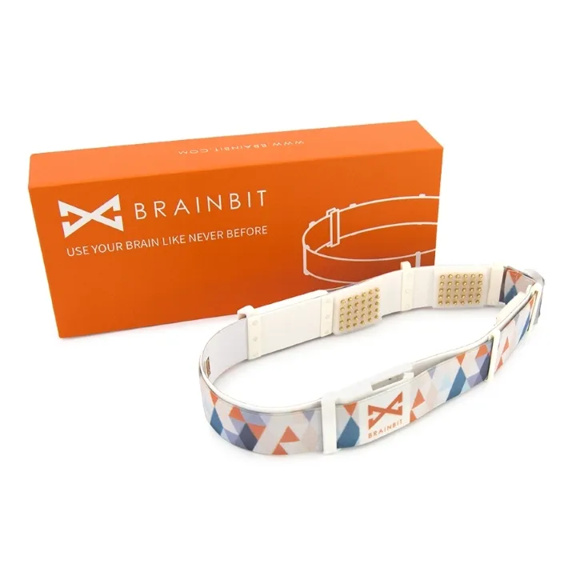
Нейротренажёр «BrainBit NeuroFit»
Система для психологов «BrainBit NeuroFit» — это беспроводной нейротренажер в виде гибкой ленты, который регистрирует биоритмы головного мозга в режиме online и с помощью специального программного обеспечения позволяет проводить психоэмоциональную коррекцию с применением метода биологической обратной связи (БОС).
-
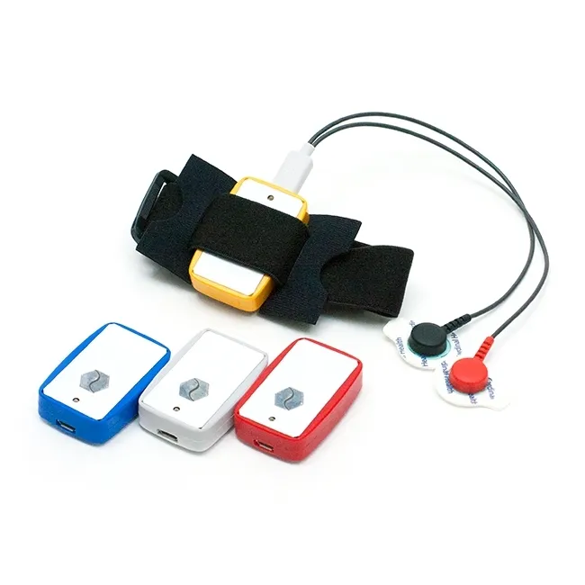
Беспроводной тренажёр БОС
Система без проводов, используемая в медицинских целях БОС «Колибри» — является комплексом для мониторинга опорно-двигательной системы, психоэмоциональной коррекции путём электрофизических сигналов. Представляет собой комплект из четырех универсальных беспроводных датчиков, каждый из которых обеспечивает регистрацию электрокардиограммы, электроэнцефалограммы и дыхания. Система предполагает тренинг одновременно по четырем произвольно назначаемым каналам.